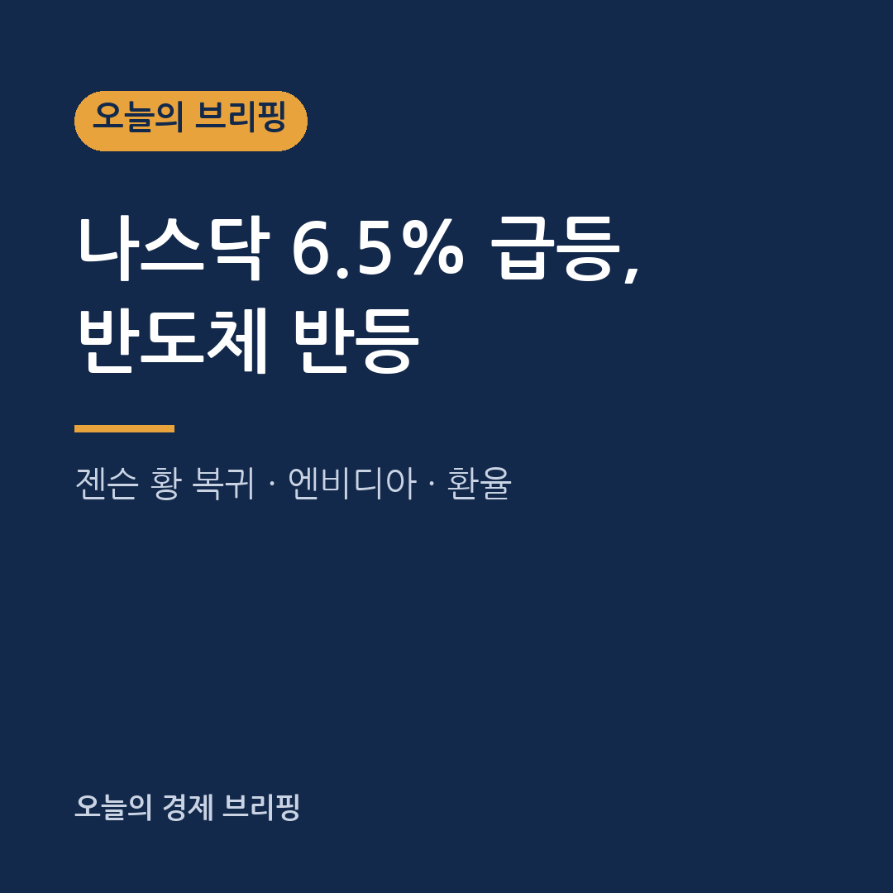
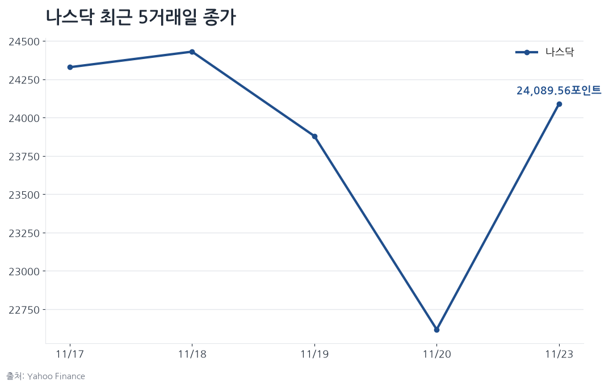

2026-11-24-0727-naver 발행 키트 · 이 페이지는 검색에 노출되지 않습니다.
제목
카테고리
오늘의 브리핑태그
본문 (그림·표 포함)
휴대폰 블로그 앱에서는 그림이 같이 붙지 않을 수 있어요. 그때는 [글자만 복사] 후 아래 이미지를 저장해 [그래프1]·[표1] 자리에 첨부하세요.

지난 금요일 반도체 때문에 가슴 철렁하셨죠? 간밤 미국 증시는 그 낙폭을 상당 부분 되돌리는 큰 반등으로 마무리됐어요.
▶ 한 줄 총평 엔비디아 CEO 젠슨 황의 복귀 소식 하나에 시장 분위기가 하루 만에 뒤집혔어요. 3대 지수가 모두 3% 넘게 올랐고, 나스닥은 6%대 상승이었어요.
▶ 지수는 얼마나 올랐을까 현지 시각 23일 기준으로 나스닥은 6.51% 올라 24,089.56에 마감했어요. S&P500은 4.73%, 다우는 3.01% 올랐고요.
11월 23일 미국 증시 마감
| 지수 | 종가 | 등락률 |
|---|---|---|
| 나스닥 | 24,089.56 | +6.51% |
| S&P500 | 7,237.17 | +4.73% |
| 다우 | 49,595.31 | +3.01% |
| 필라델피아 반도체 | 9,588.05 | +14.03% |
출처: Yahoo Finance
반도체가 가장 크게 튀었어요. 필라델피아 반도체지수가 14.03% 올라 9,588.05가 됐는데, 직전 거래일에 10.73% 빠졌던 걸 생각하면 낙폭을 대부분 회복한 셈이에요.

▶ 왜 이렇게 움직였을까 첫째, 엔비디아가 약 31.5% 폭등했어요. 경영 공백이 불안했던 투자자들이 CEO 복귀 발표에 한꺼번에 매수에 나선 모습이에요.
둘째, 같은 AI 인프라 쪽 종목도 따라 올랐어요. 한국경제 보도에 따르면 코어위브가 약 20%, 마이크론이 약 19% 상승했어요.
셋째, 복귀가 결정되기까지 과정이 빨랐다는 점도 컸어요. 사임 후 11일 만에 이사회가 입장을 바꾸면서 불확실성이 갑자기 걷혔거든요.
▶ 환율·금리·유가는요 미 국채 10년물 금리는 4.92%로 거의 제자리였고, 원·달러 환율은 1,340.87원으로 조금 올랐어요. WTI 유가는 4.44% 내린 배럴당 80.25달러였어요.
▶ 오늘 우리 증시에서 볼 것 삼성전자와 SK하이닉스 같은 반도체 대형주가 미국 반도체 반등을 이어받을지가 첫 관전 포인트예요. 다만 코스피가 10개월 만의 저점 근처라서, 하루 반등이 바닥이라고 단정하기는 어려워요.
오늘 밤 이후엔 25일 나오는 미국 10월 PCE 물가지수도 챙겨 보세요. 연준의 12월 금리 결정에 영향을 줄 수 있는 지표예요.
한 줄 정리: 하루 6% 오른 만큼 변동성도 크다는 뜻이니, 오늘은 숫자에 들뜨기보다 흐름을 차분히 지켜봐요.
여러분은 이번 반등이 이어질 것 같으세요? 댓글로 의견 남겨 주세요.
출처 (본문 맨 아래에 붙여넣기 권장)
- 연합뉴스, 나스닥 6.5%↑ 1년7개월만에 최대 상승(종합), https://www.yna.co.kr/view/AKR20261124009451072 - 한국경제, 나스닥 6.5% 급등 뉴욕증시 브리핑, https://www.hankyung.com/article/2026112454917 - 한국경제, 이사회 복귀 번복 경위, https://www.hankyung.com/article/202611235370i - 한국경제, 삼전닉스 증권가 분석, https://www.hankyung.com/article/2026112347276 - 시세: Yahoo Finance